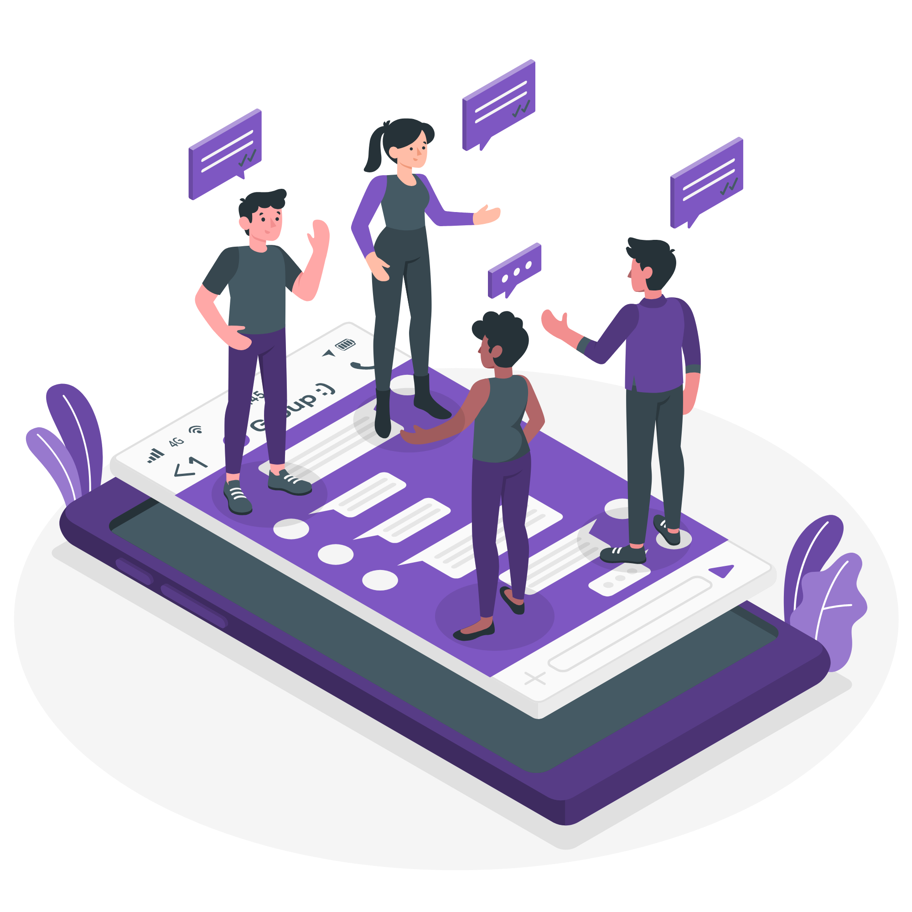
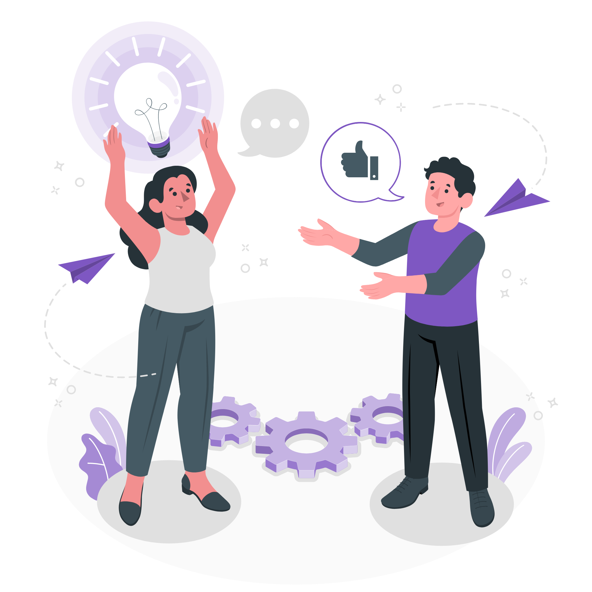

Engage customers
in decision-making
Create an insight community that empowers you to tap into the thoughts and opinions of your target audience whenever needed. By fostering an ongoing connection with your customers, you can involve them earlier in the decision-making process, gaining valuable insights and feedback at any given moment. Drive customer-centricity by leveraging the power of an insight community and make informed decisions based on real-time input from your target audience.
Discover more
Set tasks and
follow up with a meeting
Enhance the preparation of respondents by familiarizing them with the research topic ahead of in-person sessions. By providing preliminary assignments, you can delve deeper into the subject matter, streamline data collection and management, and efficiently incorporate imagery, quotes, charts, and other visual elements into your final report. Take advantage of this approach to enrich your research process, gather comprehensive insights, and create impactful reports that bring your findings to life.

Asynchronous IDIs
& digital ethnography
Engage with respondents and gain a deeper understanding of their natural behaviors by utilizing a range of asynchronous activities and tasks. Conduct in-home ethnographies, perform usage tests, delve into consumer exploration studies, and conduct brand research, among other methodologies. By leveraging these digital research approaches, you can immerse yourself in the lives of your participants, gather authentic data, and extract meaningful insights for your research objectives.
Discover more
Live video interviews and
Interactive online focus groups
Go beyond simply hearing from your customers by directly seeing and speaking to them. Recollective offers live video IDIs and focus group text chat activities that enable you to effortlessly transition traditional in-person interviews and discussions into the online realm. Seamlessly move participants between pre-assignments and in-depth conversations, leveraging the power of visual and verbal communication to enhance the depth and quality of your research interactions. With Recollective, you can engage with your participants in real-time, facilitating dynamic and immersive research experiences.

Foster co-creation
innovation & ideation
Ignite the spark of creativity, collaboration, and co-creation with your target audience to generate fresh ideas or enhance existing ones. By rapidly seeding and iterating on early concepts during the ideation process, you can gain timely insights into consumer needs and uncover opportunities for further innovation. Engage your audience in an interactive and dynamic environment that nurtures the exchange of ideas, propelling your organization towards breakthrough innovations and fostering a deep understanding of your customers' preferences and aspirations.
Discover More
Real-time research
experiences
Immerse yourself in the world of your consumers through their eyes. Engage participants in mobile missions, shop-alongs, or other in-store and in-home experiences to capture valuable information, reactions, and decisions as they unfold in the moment. By embracing in-the-moment research, you can gather authentic and timely insights, gaining a deeper understanding of consumer behavior and preferences. Step into their shoes and observe firsthand to make informed decisions and drive impactful outcomes.

Uncover rich insights
with journaling & diary
Delve into the intricate details of ongoing routines and behaviors by empowering respondents to document their experiences through diaries and journals. Whether on mobile or desktop, participants can capture their thoughts, observations, and actions at any desired length or interval. This approach enables you to gather a wealth of qualitative information, providing a deeper understanding of the intricacies of their daily lives. With diary and journaling, you can unlock valuable insights that help shape strategies, inform decision-making, and enhance the overall understanding of your target audience.
Discover MoreAnd even more contexts of application...
Built with versatility with a range of features and applicabilities to ensure that
you have everything you need to uncover the right insight within your context.
Case Studies
See how others used our platform
Extra services to ensure that you succeed
We understand that our platform may need to be supported with both the standard and optional packages in order to help you succeed in the research, that is why we offer valuable services that are customised according to the needs of your research.